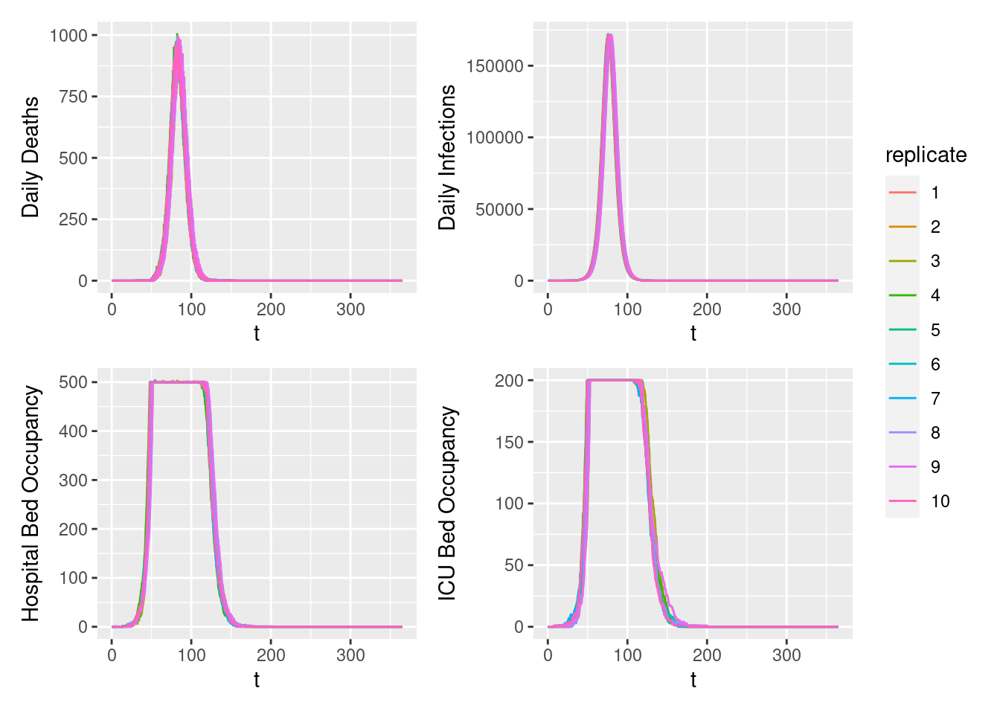

Getting Started
Running the Model (Unmitigated)
1. Running the model using baseline parameters and no control interventions
The full model is referred to as the explicit_SEEIR model, with hospital
pathways explicitly exploring whether individuals will require a general
hospital bed providing oxygen or an ICU bed that provides ventilation.
To run the model we need to provide at least one of the following arguments:
countrypopulation and contact_matrix_set
If the country is provided, the population and contact_matrix_set
will be generated (if not also specified) using the demographics and matrices
specified in the global report.
To run the model by providing the country we use run_explicit_SEEIR_model():
r <- run_explicit_SEEIR_model(country = "Afghanistan", replicates = 5)
The returned object is a squire_simulation object, which is a list of two
ojects:
output - model outputparameters - model parameters
squire_simulation objects can be plotted as follows:
plot(r)
#> Warning in plot.squire_simulation(r): Summary statistic estimated from <10
#> replicates
#> Warning in plot.squire_simulation(r): Confidence bounds estimated from <10
#> replicates
#> Warning: It is deprecated to specify `guide = FALSE` to remove a guide. Please
#> use `guide = "none"` instead.

This plot will plot each of the compartments of the model output. We can also plot specific compartments using the var_select argument that can be passed to plot(). Arguments passed to var_select must be one of the variables in the plot above.
plot(r, var_select = c("E", "IMild"))
#> Warning in plot.squire_simulation(r, var_select = c("E", "IMild")): Summary
#> statistic estimated from <10 replicates
#> Warning in plot.squire_simulation(r, var_select = c("E", "IMild")): Confidence
#> bounds estimated from <10 replicates
#> Warning: It is deprecated to specify `guide = FALSE` to remove a guide. Please
#> use `guide = "none"` instead.

Or, you can specify one of deaths, infections, hospital_occupancy, ICU_occupancy, hospital_demand or ICU_demand, and plot these summary metrics that represent the combination of a number of different compartment e.g:
plot(r, var_select = "deaths")
#> Warning in plot.squire_simulation(r, var_select = "deaths"): Summary statistic
#> estimated from <10 replicates
#> Warning in plot.squire_simulation(r, var_select = "deaths"): Confidence bounds
#> estimated from <10 replicates
#> Warning: It is deprecated to specify `guide = FALSE` to remove a guide. Please
#> use `guide = "none"` instead.

All of the plotting above makes uses of the squire function format_output which provides you with a means of manipulating and managing the output from a run_explicit_SEEIR_model call. Using it you can specify the model outputs (e.g. compartments) you want, as well as whether you want that output aggregated over age or not. Here we extract the latent compartment (E). The data columns correspond to the compartment name (compartment), timestep (t), model run number (replicate) and the model output (y).
output <- format_output(r, var_select = "E")
head(output)
#> # A tibble: 6 × 4
#> replicate compartment t y
#> <dbl> <chr> <dbl> <dbl>
#> 1 1 E 0.1 20
#> 2 1 E 0.2 20
#> 3 1 E 0.3 20
#> 4 1 E 0.4 20
#> 5 1 E 0.5 20
#> 6 1 E 0.6 20
If we wanted age-disaggregated data, we could set reduce_age to FALSE which will generate the same dataframe as before, but with an additional column indicating the age-group.
output <- format_output(r, var_select = "E", reduce_age = FALSE)
head(output)
#> # A tibble: 6 × 5
#> replicate age_group compartment t y
#> <dbl> <int> <chr> <dbl> <dbl>
#> 1 1 1 E 0.1 0
#> 2 1 1 E 0.2 0
#> 3 1 1 E 0.3 0
#> 4 1 1 E 0.4 0
#> 5 1 1 E 0.5 0
#> 6 1 1 E 0.6 0
2. Changing parameters in the model.
The model has a number of parameters for setting the R0, demography, contact
matrices, the durations of each compartment and the health care outcomes and
healthcare availability. In addition, the initial state of the population can
be changed as well as simulation parameters, such as the number of replicates,
length of simulation and the timestep. For a full list of model inputs, please
see the function documentation
For example, changing the initial R0 (default = 3), number of replicates (
default = 10), simulation length (default = 365 days) and time step (default =
0.5 days), as well as setting the population and contact matrix manually:
# Get the population
pop <- get_population("United Kingdom")
population <- pop$n
# Get the mixing matrix
contact_matrix <- get_mixing_matrix("United Kingdom")
# run the model
r <- run_explicit_SEEIR_model(population = population,
contact_matrix_set = contact_matrix,
R0 = 2.5,
time_period = 200,
dt = 0.1,
replicates = 5)
plot(r)
#> Warning in plot.squire_simulation(r): Summary statistic estimated from <10
#> replicates
#> Warning in plot.squire_simulation(r): Confidence bounds estimated from <10
#> replicates
#> Warning: It is deprecated to specify `guide = FALSE` to remove a guide. Please
#> use `guide = "none"` instead.

We can also change the R0 and contact matrix at set time points, to reflect
changing behaviour resulting from interventions. For example to set an 80%
reduction in the contact matrix after 100 days :
# run the model
r <- run_explicit_SEEIR_model(population = population,
tt_contact_matrix = c(0, 100),
contact_matrix_set = list(contact_matrix,
contact_matrix*0.2),
R0 = 2.5,
time_period = 200,
dt = 0.1,
replicates = 5)
plot(r, var_select = "infections")
#> Warning in plot.squire_simulation(r, var_select = "infections"): Summary
#> statistic estimated from <10 replicates
#> Warning in plot.squire_simulation(r, var_select = "infections"): Confidence
#> bounds estimated from <10 replicates
#> Warning: It is deprecated to specify `guide = FALSE` to remove a guide. Please
#> use `guide = "none"` instead.

where n_E2_I is the daily number of new infections.
To show an 80% reduction after 80 days but only maintained for 40 days :
# run the model
r <- run_explicit_SEEIR_model(population = population,
tt_contact_matrix = c(0, 80, 120),
contact_matrix_set = list(contact_matrix,
contact_matrix*0.2,
contact_matrix),
R0 = 2.5,
time_period = 220,
dt = 0.1,
replicates = 5)
plot(r, var_select = "infections")
#> Warning in plot.squire_simulation(r, var_select = "infections"): Summary
#> statistic estimated from <10 replicates
#> Warning in plot.squire_simulation(r, var_select = "infections"): Confidence
#> bounds estimated from <10 replicates
#> Warning: It is deprecated to specify `guide = FALSE` to remove a guide. Please
#> use `guide = "none"` instead.

Alternatively, we could set a changing R0, which falls below 1 after 80 days:
# run the model
r <- run_explicit_SEEIR_model(population = population,
contact_matrix_set = contact_matrix,
tt_R0 = c(0, 80),
R0 = c(2.5, 0.9),
time_period = 200,
dt = 0.1,
replicates = 5)
plot(r, var_select = "infections")
#> Warning in plot.squire_simulation(r, var_select = "infections"): Summary
#> statistic estimated from <10 replicates
#> Warning in plot.squire_simulation(r, var_select = "infections"): Confidence
#> bounds estimated from <10 replicates
#> Warning: It is deprecated to specify `guide = FALSE` to remove a guide. Please
#> use `guide = "none"` instead.

The model in squire also allows you to alter healthcare capacity. Default values for the arguments hosp_bed_capacity and ICU_capacity are taken from the World Bank and a systematic review of the literature. However, you can also specify your own:
library(patchwork)
r <- run_explicit_SEEIR_model(population = population,
contact_matrix_set = contact_matrix,
R0 = 2.5,
time_period = 200,
dt = 0.1,
replicates = 15,
hosp_bed_capacity = 1000,
ICU_bed_capacity = 100)
c <- plot(r, var_select = "hospital_occupancy")
d <- plot(r, var_select = "ICU_occupancy")
c / d
#> Warning: It is deprecated to specify `guide = FALSE` to remove a guide. Please use `guide = "none"` instead.
#> It is deprecated to specify `guide = FALSE` to remove a guide. Please use `guide = "none"` instead.

3. Extracting and Plotting Relevant Outputs
Whilst the above provides quick and easy ways to plot relevant outputs, we recognise users might want to play around with the data themselves. This can be done with the format_output function.
library(ggplot2)
library(patchwork)
library(dplyr)
#>
#> Attaching package: 'dplyr'
#> The following objects are masked from 'package:stats':
#>
#> filter, lag
#> The following objects are masked from 'package:base':
#>
#> intersect, setdiff, setequal, union
x <- run_explicit_SEEIR_model(country = "Afghanistan", hosp_bed_capacity = 500, ICU_bed_capacity = 200)
deaths <- format_output(x = x, var_select = "deaths") %>%
mutate(replicate = factor(replicate))
a <- ggplot(deaths, aes(x = t, y = y, col = replicate)) +
geom_line() + ylab("Daily Deaths")
infections <- format_output(x = x, var_select = "infections") %>%
mutate(replicate = factor(replicate))
b <- ggplot(infections, aes(x = t, y = y, col = replicate)) +
geom_line() + ylab("Daily Infections")
hosp_bed <- format_output(x = x, var_select = "hospital_occupancy") %>%
mutate(replicate = factor(replicate))
c <- ggplot(hosp_bed, aes(x = t, y = y, col = replicate)) +
geom_line() + ylab("Hospital Bed Occupancy")
ICU_bed <- format_output(x = x, var_select = "ICU_occupancy") %>%
mutate(replicate = factor(replicate))
d <- ggplot(ICU_bed, aes(x = t, y = y, col = replicate)) +
geom_line() + ylab("ICU Bed Occupancy")
z <- a + b + c + d +
plot_layout(guides = 'collect')
z

Hospital bed occupancy fluctuates very slightly above the user-specified number of hospital beds available (+1 in the above example). This is due to individuals being discharged from ICU beds into general hospital beds when general hospital bed occupancy is already at maximum capacity.
We assume that these individuals newly discharged from the ICU would in reality be prioritised to receive general hospital beds and so give them a general hospital bed. Whilst this is now shown in the above panel of hospital bed occupancy, this means that less-sick individuals in general hospital beds would be discharged slightly early to make space. We assume that for these small number of the healthiest individuals in hospital, there is no excess mortality associated with this early discharge.
Future work will explore a range of bed-prioritisation structures to consider how results might be shaped by who gets a bed and when.
4. Calibrating the Model to Observed Deaths Data
The model can be simply calibrated to time series of deaths reported in settings. This can be done using the calibrate function. For example, let’s use the time series of deaths in Algeria up to the 22nd April 2020:
df <- read.csv(squire:::squire_file("extdata/example_DZA.csv"), stringsAsFactors = FALSE)
head(df)
#> X date deaths cases
#> 1 1 2020-02-26T00:00:00Z 0 1
#> 2 2 2020-03-01T00:00:00Z 0 2
#> 3 3 2020-03-04T00:00:00Z 0 2
#> 4 4 2020-03-05T00:00:00Z 0 7
#> 5 5 2020-03-06T00:00:00Z 0 5
#> 6 6 2020-03-09T00:00:00Z 0 3
We can calibrate the model to this data. This calibration will infer the most likely start date of the epidemic and the R0 at the start of the epidemic. Calibration occurs by scanning across a range of possible R0 values and start dates. Fitting works using a particle filter, which can be parallelised using future::plan(future::multiprocess()) before running calibrate.
# set up for parallelisation
future::plan(future::multiprocess())
# Fit model
out <- calibrate(
data = df,
R0_min = 2,
R0_max = 4,
R0_step = 0.5,
first_start_date = "2020-02-10",
last_start_date = "2020-02-22",
day_step = 4,
replicates = 10,
n_particles = 20,
country = "Algeria"
)
calibrate returns the same output as run_explicit_SEEIR_model, with the first
three elements in out being the simulation outputs, the model and model parameters. Note that simulation replicates are aligned to the maximum date in the data provided, and as a result we can use the same plotting functions as before:
plot(out, "deaths", date_0 = max(df$date), x_var = "date")
#> Warning: It is deprecated to specify `guide = FALSE` to remove a guide. Please
#> use `guide = "none"` instead.

With default parameters, calibrate will simulate up to the maximum date in the data
provided. The fit to this data can be shown using the plotting function and specifying particle_fit
to be TRUE
plot(out, particle_fit = TRUE)

We can see that this is not the best fit, capturing only the beginning of the data points. We can also diagnose
the fitting further by looking at the scan_results of the grid search.
plot(out$scan_results)

This grid shows the negative log likeihood for each parameter pair. We can also plot the
related probability for each pair as follows:
plot(out$scan_results, what = "probability")

The reason for the poor fits to the data shown earlier is because Algeria has implemented
interventions prior to today. These can also be incorporated into calibrate.
For example, we can grab the assumed changes to transmission based on government intervention
for Algeria.
interventions <- read.csv(squire:::squire_file("extdata/example_DZA_intervention.csv"))
int_unique <- squire:::interventions_unique(interventions)
int_unique
#> $dates_change
#> [1] "2020-03-12" "2020-03-18" "2020-03-22" "2020-03-23"
#>
#> $change
#> [1] 0.900 0.850 0.550 0.225
We can then provide these to calibrate as the dates (date_R0_change) and relative reductions
to R0 (R0_change). We will also specify for model fits to be continued for 14 days into the future with
forceast = 14:
out <- calibrate(
data = df,
R0_min = 2,
R0_max = 4,
R0_step = 0.5,
first_start_date = "2020-02-10",
last_start_date = "2020-02-22",
day_step = 4,
replicates = 10,
n_particles = 20,
forecast = 14,
R0_change = int_unique$change,
date_R0_change = int_unique$dates_change,
country = "Algeria"
)
Let’s see if that is any better.
plot(out, particle_fit = TRUE)

That is a much better fit.
Any parameter that you could provide to run_explicit_SEEIR_model can be passed to calibrate. This
includes time varying arguments such as contact_matrix_set, ICU_bed_capacity and hosp_bed_capacity. To incorporate these into model fitting correctly, the date at which these change must be provided (similarly to how date_R0_change was provided above) using date_ICU_bed_capacity_change, date_ICU_bed_capacity_change and date_hosp_bed_capacity_change respectively. In addition, the user must provide a baseline value for these, i.e. the contact matrix and bed capacity at the beginning of the epidemic:
out <- calibrate(
data = df,
R0_min = 2,
R0_max = 4,
R0_step = 0.5,
first_start_date = "2020-02-10",
last_start_date = "2020-02-22",
day_step = 4,
replicates = 10,
n_particles = 20,
forecast = 14,
R0_change = int_unique$change,
date_R0_change = int_unique$dates_change,
baseline_contact_matrix = get_mixing_matrix("Algeria"),
contact_matrix_set = list(get_mixing_matrix("Algeria")*0.9),
date_contact_matrix_set_change = "2020-03-16",
baseline_hosp_bed_capacity = squire:::get_hosp_bed_capacity("Algeria"),
hosp_bed_capacity = squire:::get_hosp_bed_capacity("Algeria")*c(1.1,1.2),
date_hosp_bed_capacity_change = c("2020-04-02", "2020-04-08"),
baseline_ICU_bed_capacity = squire:::get_ICU_bed_capacity("Algeria"),
ICU_bed_capacity = squire:::get_ICU_bed_capacity("Algeria")*c(1.05),
date_ICU_bed_capacity_change = c("2020-04-10"),
country = "Algeria"
)
(N.B. Given the potentially long running time for the grid search, the model state is returned at the end of every day rather than every time step (provided by dt). As a result model outputs such as n_E2_I (number of infections in a time step) and delta_D (number of deaths in a time step) reflect the outputs in the last time step rather than in all the time steps in the last day. The plotting functions and format_output provided in squire handle this correctly and work out the correct number for these in the last day.)
5. Conducting scenario projections to fitted data
Once you have calibrated the model to death data, it is possible to then implement mitigation strategies forwards in time from the point of calibration. This is achieved using the projections function. For example, let’s consider a country that as of 28th April 2020 is yet to experience an epidemic take off but may be about to. Guinea reported its first COVID-19 death on 16th April 2020 and has reported 7 deaths by the 28th April 2020 according to data from the European CDC.
First let’s calibrate to this data with no interventions in place (there are likely some interventions in place but nothing major, such as a lockdown, has been implemented by 2020-04-28) and simulate forward for 180 days:
df <- read.csv(squire:::squire_file("extdata/example_GIN.csv"), stringsAsFactors = FALSE)
out <- calibrate(
data = df,
R0_min = 2.5,
R0_max = 4,
R0_step = 0.5,
first_start_date = "2020-03-10",
last_start_date = "2020-03-25",
day_step = 5,
replicates = 10,
n_particles = 20,
forecast = 180,
country = "Guinea"
)
Firstly, let’s plot the fit up to the current day
plot(out, particle_fit = TRUE) +
ggplot2::xlim(as.Date(c("2020-04-10","2020-04-28"))) +
ggplot2::ylim(c(0,10))

The fit is good and captures the stuttering chains at the beginning of the epidemic. However, if we plot the forecasted deaths we can see the epidemic is likely to take off:
plot(out, "deaths")
#> Warning: It is deprecated to specify `guide = FALSE` to remove a guide. Please
#> use `guide = "none"` instead.

We can now use the output of calibrate to explore different scenario projections using projections. For example, to contast this unmitigated epidemic against a mitigation scenario with a 50% reduction in R0 today and a further 30% in 2 weeks time:
# create our projections
p <- projections(r = out, R0_change = c(0.5, 0.2), tt_R0 = c(0, 14))
The output generated from projections is the same class and structure as from calibrate and can be plotted against the unmitigated scenario using projection_plotting:
ggproj <- projection_plotting(r_list = list(out,p),
scenarios = c("Unmitigated","Mitigation"),
var_select = c("ICU_occupancy", "ICU_demand"),
add_parms_to_scenarios = TRUE,ci = FALSE,summarise = TRUE)
# and lets add in the ICU capacity
ggproj + ggplot2::geom_hline(yintercept = out$parameters$ICU_bed_capacity)
#> Warning: It is deprecated to specify `guide = FALSE` to remove a guide. Please
#> use `guide = "none"` instead.

We can see above that the intervention introduced is nearly sufficient to prevent ICU demand (solid line red) from exceeding the supply, whereas in the unmitigated strategy this did occur.
We can also model changing interventions by changing the contact matrix over time as well as the availability of ICU and hospital beds. E.g. decreasing contacts by 75% in a week before relaxing it to 80% in 30 days time, while increasing hospital and ICU beds by 200% in 30 days time. (N.B. We can turn off the automatic scenario parameter labelling with add_parms_to_scenarios = FALSE):
# create our projections
p <- projections(r = out,
contact_matrix_set_change = c(1, 0.25, 0.8),
tt_contact_matrix = c(0, 7, 30),
hosp_bed_capacity_change = c(1, 3),
tt_hosp_beds = c(0, 30),
ICU_bed_capacity_change = c(1, 3),
tt_ICU_beds = c(0,30))
projection_plotting(r_list = list(out, p),
scenarios = c("Unmitigated","Mitigation"),
var_select = c("ICU_occupancy", "ICU_demand","deaths"),
add_parms_to_scenarios = FALSE,
ci = FALSE,summarise = TRUE) +
ggplot2::geom_hline(yintercept = out$parameters$ICU_bed_capacity)
#> Warning: It is deprecated to specify `guide = FALSE` to remove a guide. Please
#> use `guide = "none"` instead.

Above we can see that the increase in bed causes the mitigation strategy to plateau at a higher bed occupancy, however, not high enough to meet the demand. However, the impacts to the contact matrix and beds have caused both a shift and a decrease in the daily deaths, which in turn causes a noticable decrease in total deaths:
projection_plotting(r_list = list(out,p),
scenarios = c("Unmitigated","Mitigation"),
var_select = c("D"),
add_parms_to_scenarios = FALSE,
ci = FALSE,summarise = TRUE)
#> Warning: It is deprecated to specify `guide = FALSE` to remove a guide. Please
#> use `guide = "none"` instead.

Rather than using relative changes to the interventions, we can provide absolute measures. For example, to change the R0 to 2 today and add 500 ICU beds in 40 days time:
# what is the current capacity
icu <- tail(out$parameters$ICU_bed_capacity,1)
# create our projections
p <- projections(r = out,
R0 = 2,
tt_R0 = 0,
ICU_bed_capacity = c(icu, icu + 500),
tt_ICU_beds = c(0,40))
projection_plotting(r_list = list(out,p),
scenarios = c("Unmitigated","Mitigation"),
var_select = c("ICU_occupancy", "ICU_demand","deaths"),
add_parms_to_scenarios = FALSE,
ci = FALSE,summarise = TRUE)
#> Warning: It is deprecated to specify `guide = FALSE` to remove a guide. Please
#> use `guide = "none"` instead.

Lastly, in order to run simulations for longer than the number set in calibrate(forecast = x), we can use the argument time_period to set the numbers of days that projections should simulate for. For example, we could redo our calibration and have it only run up the current day:
df <- read.csv(squire:::squire_file("extdata/example_GIN.csv"), stringsAsFactors = FALSE)
out <- calibrate(
data = df,
R0_min = 2.5,
R0_max = 4,
R0_step = 0.5,
first_start_date = "2020-03-10",
last_start_date = "2020-03-25",
day_step = 5,
replicates = 10,
n_particles = 20,
forecast = 0,
country = "Guinea"
)
plot(out, particle_fit = TRUE)

We can now use this to project 90 days forwards with the current level of interventions, as well as a projection of 90 days with a 50% reduction in R0:
p_no_change <- projections(out, time_period = 90)
p_change <- projections(out, R0_change = 0.5, tt_R0 = 0, time_period = 90)
projection_plotting(list(p_no_change, p_change),
scenarios = c("No Change", "50% R0"),
add_parms_to_scenarios = FALSE,
var_select = "deaths",
date_0 = max(df$date),
x_var = "date")